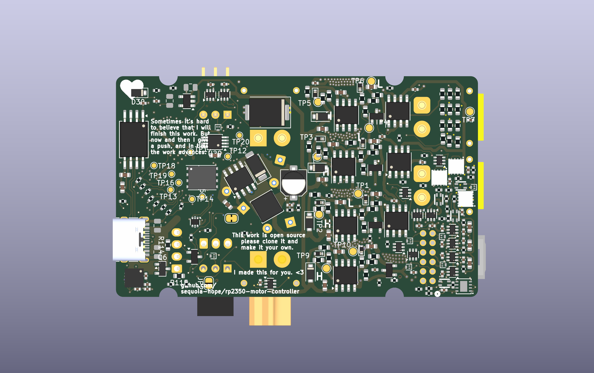
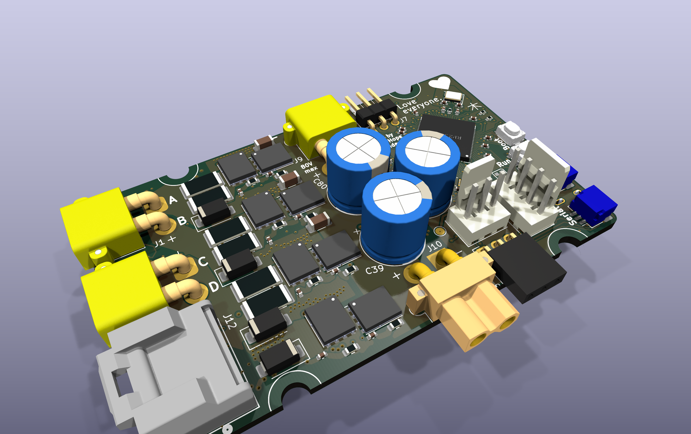
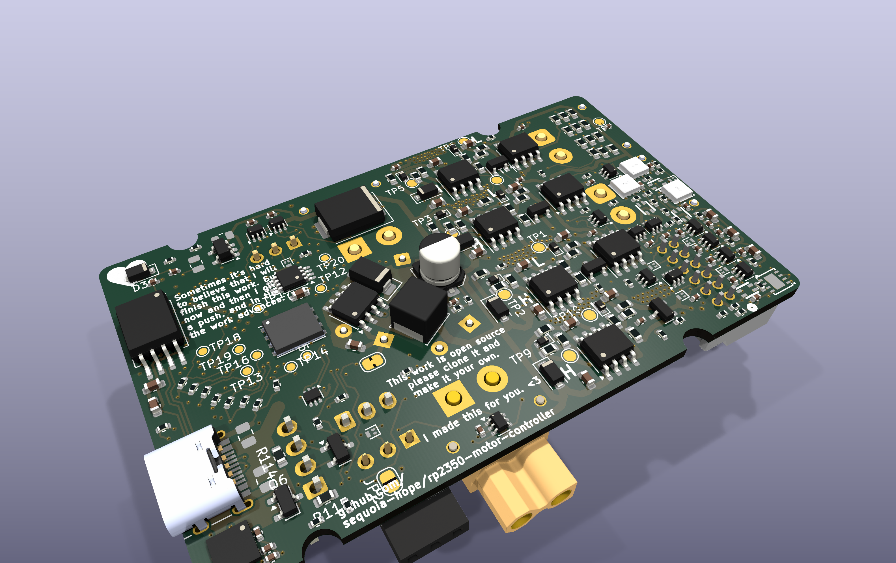
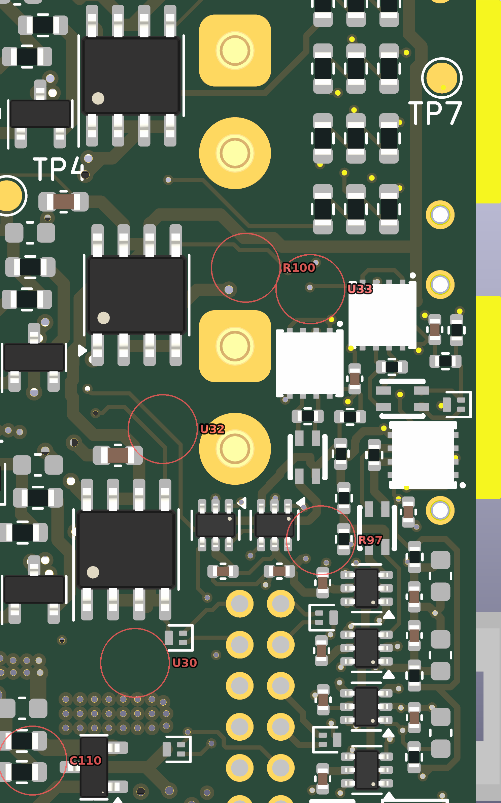
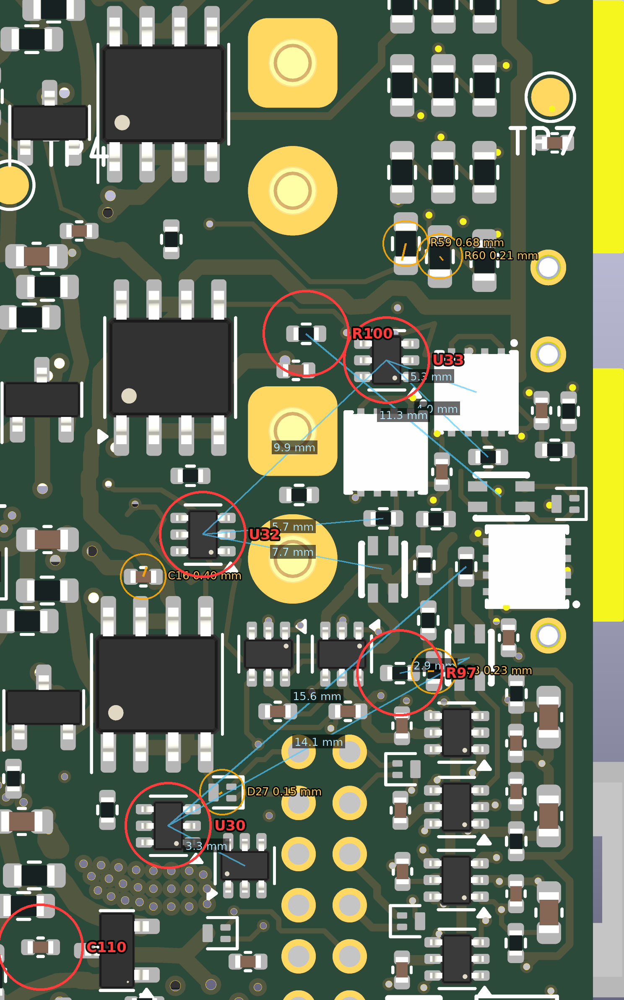
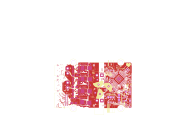

Plan of Record — the settled board, rendered
Rev-A copper · rev-B schematic · Tier-A footprints · settle-engine placement (power stage squeezed, seven encoder-corner parts born) · 2026-09-03 · settle log · hub
lean-jiggle, run enc_after_wide, checkpoint step_12 (final). It is the shipped rev-A copper with the rev-B schematic on it, the Tier-A footprint swaps, the power stage settled toward the top edge, and the seven parts that had no room now placed — every checkpoint on the way DRC-gated against the shipped baseline, static copper byte-identical, check_sync IN SYNC. Adopted as plan of record on 2026-09-03 (the alternative was to keep it as one experiment among several). Nothing has been merged to rev-b-lean yet; the file is copied to hardware/tools/settle/candidates/plan_of_record.kicad_pcb in the lean-jiggle worktree (untracked), and regenerates with pipeline.py configs/enc_after_wide.json.The board
| Outline | 76.05 × 46.45 mm, 6 copper layers, rev-A outline unchanged (no west-edge extension) |
|---|---|
| Parts | 323 footprints — 94 top, 229 bottom. vs rev-A: +33 (U30–U33, Q6, JP2, D30/D31, R97–R115, C110–C115), −1 (C79) |
| Footprints changed vs rev-A | 184: 140 courtyard-only _JLC variants, 15 × 0603→0402, 8 × 0805→0402, 8 × 0805→0603, 10 test points without courtyards, plus D1 LED_WS2812_3528_3.5x2.8mm_P1.5mm → LED_WS2812B-2020_PLCC4_2.0x2.0mm_MotorBuck; Q5 SOT-89-3 → PowerPAK_SO-8_123; U29 SOT-23-6 → MSOP-8_3x3mm_P0.65mm |
| Copper | 4558 track segments (the lean board had 3951 — the settle engine re-emits the copper it moved as shorter segments, same geometry), 488 vias |
| Rules | min clearance 0.10 mm, min track 0.10 mm, via 0.35 / 0.20 mm, hole clearance 0.254, edge clearance 0.30 (the space-budget rule set, applied on lean-jiggle) |
| DRC (kicad-cli, all severities) | 3 errors, all courtyard overlaps: D23/U22 and J7/C38 inherited from the lean board; J9/BH1 was an excluded pair on the lean board and BH1 moved 0.66 mm in the squeeze, so the exclusion no longer matches and needs re-marking. Excluded: 9 padstack, 4 courtyard, 2 starved-thermal (all rev-A inheritances). Warnings: silk overlap 69 (lean 56), silk over copper 41 (lean 22), dangling track 29 (30) — the moved parts owe a silkscreen pass. |
| Unconnected | 103 airwires, unchanged from the lean board: rev-B nets on rev-A copper. Routing them is the next stage; the placement here is what they route to. |
| Gate | 13/13 checkpoints: 0 new violations vs the checkpoint-0 baseline, 0 static copper missing, 0 fixed footprints moved, length caps respected, check_sync True (run page) |
3D renders
Rendered with kicad-cli pcb render 9.0.8 from the candidate file, KiCad 6/8 model paths pointed at the system library so the passives resolve (the DFN transceivers and a few connectors have uncoloured STEP models and render white; the FETs' models are placeholders). Orthographic views at 3200 × 2000; click any image for full size.







Before / after: rev A → plan of record
Drag the divider. Left is the shipped rev-A board (tag rev-A-fab), right is the candidate, both rendered with identical camera parameters so every pixel lines up; only the parts that changed move.
The encoder corner
Bottom side, zoom on the corner the settle engine was built for (x 110–137 mm, mirrored: the board's west edge is on the right). Red circles are the seven parts that rev-A's copper had no room for; orange marks the five neighbours the engine nudged to make that room; blue lines run from each new part to the nearest pad on each of its signal nets, labelled with the airwire length that routing will have to cover.




Where the seven landed
| Part | What | Site (mm) | Signal nets → nearest partner pad |
|---|---|---|---|
| U33 | TS5A3159 (SC-70) | (120.57, 99.73) B | TERM_D_R → R85 4.0 mm; ENC_D_TRX_A → U21 5.3 mm; TERM_SW → U32 9.9 mm |
| R100 | 10 k (0402) | (123.72, 98.69) B | ENC_D_P → FL4 11.3 mm |
| U32 | TS5A3159 (SC-70) | (127.76, 106.55) B | TERM_C_R → R84 5.7 mm; ENC_C_TRX_A → FL3 7.7 mm; TERM_SW → U33 9.9 mm |
| R97 | 10 k (0402) | (120.06, 111.97) B | ENC_A_P_SW → FL2 2.9 mm |
| U30 | TS5A3159 (SC-70) | (129.12, 117.94) B | TERM_A_R → R82 15.6 mm; ENC_A_TRX_A → FL2 14.1 mm; TERM_SW → U31 3.3 mm |
| R98 | 10 k (0402) | (124.92, 126.77) B | ENC_B_P_SW → FL1 5.3 mm |
| C110 | 100 n (0402) | (134.12, 122.69) B | power/GND only — 6.9 mm from U30, the part it decouples |
The five nudged neighbours
| Part | Moved | (dx, dy) mm |
|---|---|---|
| R59 | 0.68 mm | (-0.15, -0.66) |
| C16 | 0.40 mm | (+0.13, +0.38) |
| R88 | 0.23 mm | (-0.23, -0.01) |
| R60 | 0.21 mm | (+0.13, -0.16) |
| D27 | 0.15 mm | (-0.13, -0.08) |
The power stage
Every part of the power region was given a 3 mm target toward the top edge and let the length springs, the 0.3 mm gate-loop caps, the fixed INA240 sense pads and the zone attachments hold it (power_squeeze). 110 parts moved — 76 bottom, 34 top — all of them upward, median 1.22 mm, maximum 3.00 mm.
| Displacement | Parts |
|---|---|
| under 0.5 mm | 22 |
| 0.5 – 1 mm | 22 |
| 1 – 2 mm | 45 |
| 2 – 3 mm | 21 |
Largest twelve moves
| Part | mm | Side |
|---|---|---|
| TP3 | 3.00 | B |
| D10 | 3.00 | B |
| TP5 | 3.00 | B |
| R25 | 3.00 | B |
| R41 | 2.99 | B |
| D15 | 2.70 | B |
| R75 | 2.58 | B |
| C15 | 2.50 | B |
| C1 | 2.42 | F |
| C51 | 2.39 | B |
| R37 | 2.32 | F |
| TP4 | 2.29 | B |
2D plots
Straight kicad-cli pcb export svg plots of the candidate, board area only; the back is mirrored. Copper, silkscreen, mask and edge cuts per side.

Single copper layers, unmirrored, with the outline: F.Cu In1.Cu In2.Cu In3.Cu In4.Cu B.Cu


What adopting it commits to, and what is still open
- Routing: 103 airwires, the rev-B nets on rev-A copper — the F-19 CAN parts, the USB power path (F-27/F-39), the termination switches and their pull-ups, E-stop, LED_VDD. This placement fixes where they go; nothing is routed yet.
- Silkscreen: the moved parts left 13 more silk overlaps and 19 more silk-over-copper warnings than the lean board. Cosmetic, but a fab-file pass.
- DRC housekeeping: re-mark the J9/BH1 exclusion; D23/U22 and J7/C38 were already open on the lean board and want a look.
- The encoder trade: U30 / R100 / C110 distances above. If they are not acceptable the alternatives are the atomic group jump (not built) or hand rework of the switch fabric.
- Rules: this board is DRC-clean at 0.10/0.10 only. The F-47/F-48 decision (rules, via-in-pad) is baked in.
- Ordering blockers are unchanged: EG3113 stock (F-40), gate drive at 5 V (F-41).
How to land it
cd ~/pcb/rp2350-motor-controller-lean-jiggle cp hardware/tools/settle/candidates/plan_of_record.kicad_pcb hardware/rp2350_driver.kicad_pcb # keeps the 0.10/0.10 .kicad_pro python3 hardware/tools/revb/check_sync.py # expect IN SYNC git add hardware/rp2350_driver.kicad_pcb hardware/tools/settle/candidates && git commit # then merge lean-jiggle → rev-b-lean
Renders regenerate from the scratch recipe in this session's notes: kicad-cli pcb render -D KICAD6_3DMODEL_DIR=/usr/share/kicad/3dmodels -D KICAD8_3DMODEL_DIR=/usr/share/kicad/3dmodels --background opaque --quality basic -w 3200 -h 2000 --side top|bottom; corner zoom --side bottom -w 1500 -h 2400 --zoom 2.0 --pivot "-2.7,0,0"; power zoom --pivot "-1.05,0,0"; perspective --quality high --perspective --rotate "-40,0,30" (top) / "-40,0,-30" (bottom). Annotation fits pixels to millimetres from the four XT30 pin pads (61 px/mm, residual under 0.1 px).